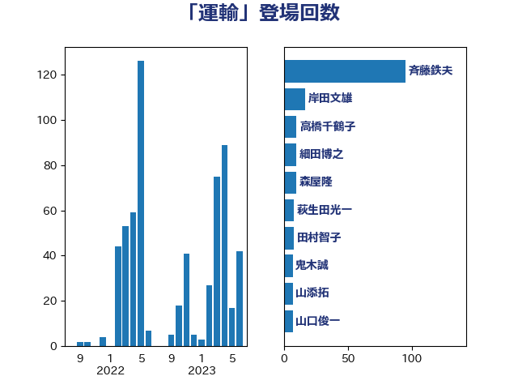

単語「運輸」

| 斉藤鉄夫 | 公明党 | 95 回 |
| 岸田文雄 | 自由民主党 | 17 回 |
| 高橋千鶴子 | 日本共産党 | 10 回 |
| 細田博之 | 自由民主党 | 10 回 |
| 森屋隆 | 立憲民主党 | 10 回 |
| 萩生田光一 | 自由民主党 | 8 回 |
| 田村智子 | 日本共産党 | 8 回 |
| 鬼木誠 | 立憲民主党 | 7 回 |
| 山添拓 | 日本共産党 | 7 回 |
| 山口俊一 | 自由民主党 | 7 回 |
| 大串博志 | 立憲民主党 | 7 回 |
| 塩川鉄也 | 日本共産党 | 7 回 |
| 西村康稔 | 自由民主党 | 6 回 |
| 浜野喜史 | 国民民主党 | 6 回 |
| 浜田聡 | NHK党 | 6 回 |
| 伊藤渉 | 公明党 | 6 回 |
| 西村明宏 | 自由民主党 | 5 回 |
| 石井苗子 | 日本維新の会 | 5 回 |
| 古川元久 | 国民民主党 | 5 回 |
| 谷田川元 | 立憲民主党 | 4 回 |
| 藤川政人 | 自由民主党 | 4 回 |
| 福島伸享 | 無所属 | 4 回 |
| 石井準一 | 自由民主党 | 4 回 |
| 田中健 | 国民民主党 | 4 回 |
| 山崎誠 | 立憲民主党 | 4 回 |
| 尾辻秀久 | 無所属 | 4 回 |
| おおつき紅葉 | 立憲民主党 | 4 回 |
| 野田聖子 | 自由民主党 | 3 回 |
| 西村智奈美 | 立憲民主党 | 3 回 |
| 藤岡隆雄 | 立憲民主党 | 3 回 |
| 芳賀道也 | 国民民主党 | 3 回 |
| 笠井亮 | 日本共産党 | 3 回 |
| 石井浩郎 | 自由民主党 | 3 回 |
| 石井拓 | 自由民主党 | 3 回 |
| 渡辺周 | 立憲民主党 | 3 回 |
| 浜口誠 | 国民民主党 | 3 回 |
| 河西宏一 | 公明党 | 3 回 |
| 武村展英 | 自由民主党 | 3 回 |
| 小野泰輔 | 日本維新の会 | 3 回 |
| 今枝宗一郎 | 自由民主党 | 3 回 |
| 三上えり | 立憲民主党 | 3 回 |
| 一谷勇一郎 | 日本維新の会 | 3 回 |
| 鎌田さゆり | 立憲民主党 | 2 回 |
| 野田国義 | 立憲民主党 | 2 回 |
| 紙智子 | 日本共産党 | 2 回 |
| 竹詰仁 | 国民民主党 | 2 回 |
| 窪田哲也 | 公明党 | 2 回 |
| 福岡資麿 | 自由民主党 | 2 回 |
| 田村まみ | 国民民主党 | 2 回 |
| 牧野たかお | 自由民主党 | 2 回 |
| 渡辺猛之 | 自由民主党 | 2 回 |
| 河野太郎 | 自由民主党 | 2 回 |
| 武井俊輔 | 自由民主党 | 2 回 |
| 櫻井周 | 立憲民主党 | 2 回 |
| 枝野幸男 | 立憲民主党 | 2 回 |
| 林芳正 | 自由民主党 | 2 回 |
| 村田享子 | 立憲民主党 | 2 回 |
| 朝日健太郎 | 自由民主党 | 2 回 |
| 市村浩一郎 | 日本維新の会 | 2 回 |
| 山東昭子 | 自由民主党 | 2 回 |
| 山下芳生 | 日本共産党 | 2 回 |
| 小沢雅仁 | 立憲民主党 | 2 回 |
| 吉川元 | 立憲民主党 | 2 回 |
| 前川清成 | 日本維新の会 | 2 回 |
| 中野洋昌 | 公明党 | 2 回 |
| 中川康洋 | 公明党 | 2 回 |
| 上田英俊 | 自由民主党 | 2 回 |
| たがや亮 | れいわ新選組 | 2 回 |
| 高良鉄美 | 無所属 | 1 回 |
| 高橋光男 | 公明党 | 1 回 |
| 阿達雅志 | 自由民主党 | 1 回 |
| 長浜博行 | 無所属 | 1 回 |
| 鈴木俊一 | 自由民主党 | 1 回 |
| 金子恭之 | 自由民主党 | 1 回 |
| 赤羽一嘉 | 公明党 | 1 回 |
| 角田秀穂 | 公明党 | 1 回 |
| 西銘恒三郎 | 自由民主党 | 1 回 |
| 菅家一郎 | 自由民主党 | 1 回 |
| 緑川貴士 | 立憲民主党 | 1 回 |
| 細田健一 | 自由民主党 | 1 回 |
| 竹谷とし子 | 公明党 | 1 回 |
| 竹内真二 | 公明党 | 1 回 |
| 福島みずほ | 社会民主党 | 1 回 |
| 福山哲郎 | 立憲民主党 | 1 回 |
| 礒崎哲史 | 国民民主党 | 1 回 |
| 磯崎仁彦 | 自由民主党 | 1 回 |
| 石川香織 | 立憲民主党 | 1 回 |
| 石川大我 | 立憲民主党 | 1 回 |
| 石垣のりこ | 立憲民主党 | 1 回 |
| 滝沢求 | 自由民主党 | 1 回 |
| 湯原俊二 | 立憲民主党 | 1 回 |
| 清水貴之 | 日本維新の会 | 1 回 |
| 浜田靖一 | 自由民主党 | 1 回 |
| 池下卓 | 日本維新の会 | 1 回 |
| 森本真治 | 立憲民主党 | 1 回 |
| 松野博一 | 自由民主党 | 1 回 |
| 木村英子 | れいわ新選組 | 1 回 |
| 木村次郎 | 自由民主党 | 1 回 |
| 日下正喜 | 公明党 | 1 回 |
| 新妻秀規 | 公明党 | 1 回 |
| 徳永エリ | 立憲民主党 | 1 回 |
| 平山佐知子 | 無所属 | 1 回 |
| 工藤彰三 | 自由民主党 | 1 回 |
| 岬麻紀 | 日本維新の会 | 1 回 |
| 岩渕友 | 日本共産党 | 1 回 |
| 岩本剛人 | 自由民主党 | 1 回 |
| 岩屋毅 | 自由民主党 | 1 回 |
| 山田美樹 | 自由民主党 | 1 回 |
| 山本佐知子 | 自由民主党 | 1 回 |
| 山岸一生 | 立憲民主党 | 1 回 |
| 山口壯 | 自由民主党 | 1 回 |
| 尾身朝子 | 自由民主党 | 1 回 |
| 小林鷹之 | 自由民主党 | 1 回 |
| 小宮山泰子 | 立憲民主党 | 1 回 |
| 宮崎勝 | 公明党 | 1 回 |
| 室井邦彦 | 日本維新の会 | 1 回 |
| 太田房江 | 自由民主党 | 1 回 |
| 大岡敏孝 | 自由民主党 | 1 回 |
| 大家敏志 | 自由民主党 | 1 回 |
| 城井崇 | 立憲民主党 | 1 回 |
| 坂本哲志 | 自由民主党 | 1 回 |
| 國場幸之助 | 自由民主党 | 1 回 |
| 和田政宗 | 自由民主党 | 1 回 |
| 吉田はるみ | 立憲民主党 | 1 回 |
| 古川直季 | 自由民主党 | 1 回 |
| 古川康 | 自由民主党 | 1 回 |
| 勝目康 | 自由民主党 | 1 回 |
| 佐藤信秋 | 自由民主党 | 1 回 |
| 中野英幸 | 自由民主党 | 1 回 |
| 中西健治 | 自由民主党 | 1 回 |
| 中川郁子 | 自由民主党 | 1 回 |